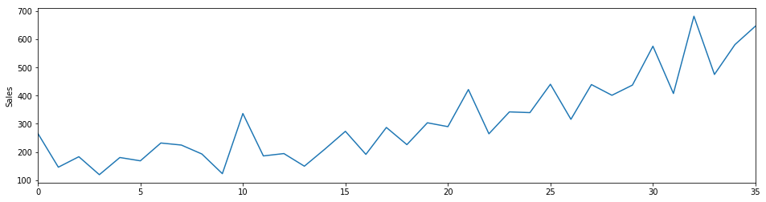
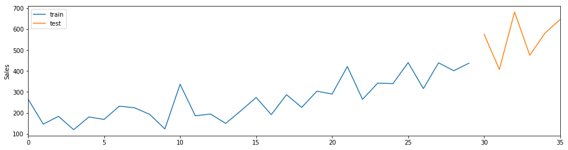
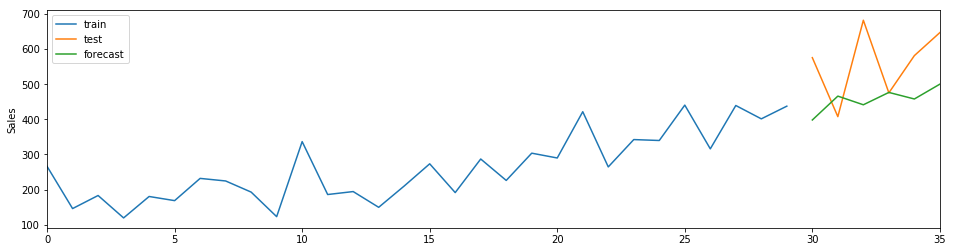
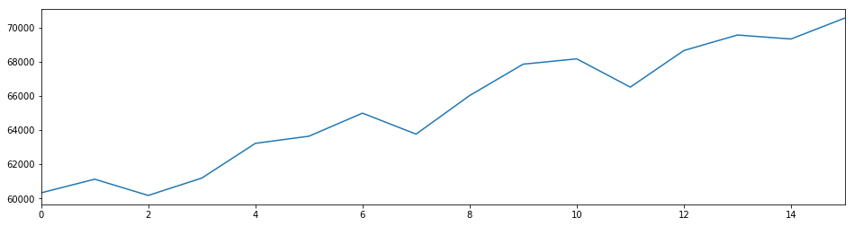

Forecasting with sktime¶
In this tutorial, we implement and evaluate some of the available forecasting strategies in sktime, using both the low-level and high-level interface, with both univariate and multivariate time series data.
Preliminaries¶
[1]:
from sktime.forecasters import DummyForecaster
from sktime.forecasters import ARIMAForecaster
from sktime.forecasters import ExpSmoothingForecaster
from sktime.forecasters import EnsembleForecaster
from sktime.highlevel.tasks import ForecastingTask
from sktime.highlevel.strategies import ForecastingStrategy
from sktime.highlevel.strategies import Forecasting2TSRReductionStrategy
from sktime.datasets import load_shampoo_sales
from sktime.datasets import load_longley
from sktime.transformers.compose import Tabulariser
from sktime.pipeline import Pipeline
from sklearn.ensemble import RandomForestRegressor
from sklearn.metrics import mean_squared_error
import pandas as pd
import numpy as np
import os
import matplotlib.pyplot as plt
from warnings import filterwarnings
[2]:
filterwarnings(action='ignore', category=FutureWarning, module='statsmodels')
%matplotlib inline
Low-level interface¶
Single series forecasting¶
Split the data into train, test and optionally also an updated dataset
Put the data into the expected input format, i.e. a nested pandas Series
Load shampoo sales dataset from sktime containing monthly sale counts of shampoo over three years.
[3]:
shampoo = load_shampoo_sales()
s = shampoo.iloc[0]
s.head()
[3]:
0 266.0
1 145.9
2 183.1
3 119.3
4 180.3
Name: Sales, dtype: float64
[4]:
fig, ax = plt.subplots(1, figsize=plt.figaspect(.25))
s.plot(ax=ax)
ax.set(ylabel=s.name);

[5]:
# split data into train, update and test
train = pd.Series([shampoo.iloc[0].iloc[:30]])
test = pd.Series([shampoo.iloc[0].iloc[30:]])
[6]:
fig, ax = plt.subplots(1, figsize=plt.figaspect(.25))
train.iloc[0].plot(ax=ax, label='train')
test.iloc[0].plot(ax=ax, label='test')
ax.set(ylabel=s.name)
plt.legend();

[7]:
# arima model
order = (3, 2, 1)
m = ARIMAForecaster(order=order)
m.fit(train)
fh = np.arange(1, 7)
y_pred = m.predict(fh=fh)
y_pred
[7]:
30 398.089691
31 466.013453
32 441.347911
33 476.524325
34 457.849554
35 500.079676
dtype: float64
[8]:
# evaluate forecasts using default scorer (root mean squared error)
m.score(test, fh=fh)
[8]:
146.96807856765895
[9]:
fig, ax = plt.subplots(1, figsize=plt.figaspect(.25))
train.iloc[0].plot(ax=ax, label='train')
test.iloc[0].plot(ax=ax, label='test')
y_pred.plot(ax=ax, label='forecast')
ax.set(ylabel=s.name)
plt.legend();

Comparing forecasts with other models¶
[10]:
# simple exponential smoothing
m = ExpSmoothingForecaster()
m.fit(train)
m.score(test, fh=fh)
[10]:
182.55208208806164
[11]:
# ensemble of forecasters
estimators = [
('ses', ExpSmoothingForecaster()),
('holt', ExpSmoothingForecaster(trend='additive')),
('damped', ExpSmoothingForecaster(trend='additive', damped=True))
]
m = EnsembleForecaster(estimators=estimators)
m.fit(train)
m.score(test, fh=fh)
[11]:
155.1063712366893
Common hyper-parameter interface¶
[12]:
# check set params interface
# simple exponential smoothing
m = ExpSmoothingForecaster()
m.fit(train)
m.get_params()
[12]:
{'check_input': True,
'damped': False,
'damping_slope': None,
'optimized': True,
'remove_bias': False,
'seasonal': None,
'seasonal_periods': None,
'smoothing_level': None,
'smoothing_seasonal': None,
'smoothing_slope': None,
'trend': None,
'use_basinhopping': False,
'use_boxcox': False}
[13]:
# automatically fitted param
m._fitted_estimator.params['smoothing_level']
[13]:
0.35282128167902543
[14]:
m.set_params(**{'smoothing_level': .75})
m.fit(train)
m.score(test, fh=fh)
[14]:
162.49044852118521
[15]:
# user given fixed parameter
m._fitted_estimator.params['smoothing_level']
[15]:
0.75
Forecasting with exogenous time series¶
[16]:
# load multivariate data
X, y = load_longley(return_X_y=True)
# get data in required format
y_train = pd.Series([y.iloc[0].iloc[:13]])
y_test = pd.Series([y.iloc[0].iloc[13:]])
X_train = pd.DataFrame([pd.Series([X.iloc[0, i].iloc[:13]]) for i in range(X.shape[1])]).T
X_train.columns = X.columns
X_test = pd.DataFrame([pd.Series([X.iloc[0, i].iloc[13:]]) for i in range(X.shape[1])]).T
X_test.columns = X.columns
[17]:
fig, ax = plt.subplots(1, figsize=plt.figaspect(.25))
s = y.iloc[0]
s.plot(ax=ax);

[18]:
y_train.iloc[0].tail()
[18]:
8 66019
9 67857
10 68169
11 66513
12 68655
Name: TOTEMP, dtype: int64
[19]:
y_test.iloc[0]
[19]:
13 69564
14 69331
15 70551
Name: TOTEMP, dtype: int64
[20]:
# forecasting horizon for test period
fh = np.arange(y_test.iloc[0].shape[0]) + 1
fh
[20]:
array([1, 2, 3])
Compare model performance with and without exogenous features
[21]:
order = (3, 2, 1)
[22]:
m = ARIMAForecaster(order=order)
m.fit(y_train, X=X_train)
m.predict(fh=fh, X=X_test)
[22]:
13 69459.894738
14 68996.247410
15 71092.492103
dtype: float64
[23]:
m.score(y_test, X=X_test, fh=fh)
[23]:
372.42936662335666
[24]:
m = ARIMAForecaster(order=order)
m.fit(y_train)
m.score(y_test,fh=fh)
[24]:
1400.8569388795754
High-level interface¶
Put data into expected format, i.e. nested pandas DataFrame
Specify forecasting task
Use forecasting strategies
Single series forecasting¶
[25]:
# get data into expected nested format
shampoo = load_shampoo_sales(return_y_as_dataframe=True)
train = pd.DataFrame(pd.Series([shampoo.iloc[0, 0].iloc[:24]]), columns=shampoo.columns)
update = pd.DataFrame(pd.Series([shampoo.iloc[0, 0].iloc[:30]]), columns=shampoo.columns)
test = pd.DataFrame(pd.Series([shampoo.iloc[0, 0].iloc[30:]]), columns=shampoo.columns)
[26]:
# create forecasting task specifying variable to be forecasted and forecasting horizon
task = ForecastingTask(target='ShampooSales', fh=[6, 7, 8], metadata=train)
[27]:
# ARIMA forecasting strategy
estimator = ARIMAForecaster()
m = ForecastingStrategy(estimator=estimator)
m.fit(task, train)
m.predict()
[27]:
29 242.356876
30 228.803899
31 216.008826
dtype: float64
[28]:
# update estimator with data up to point of prediction and predict again
m.update(update)
m.predict()
[28]:
0 323.158046
1 251.124862
2 137.741043
dtype: float64
[29]:
# naive forecasting strategies
estimator = DummyForecaster(strategy='mean')
m = ForecastingStrategy(estimator=estimator)
m.fit(task, train)
m.predict()
[29]:
29 229.625
30 229.625
31 229.625
dtype: float64
Reduction strategies¶
Reduction strategies allow us to solve forecasting tasks with time-series regression algorithms using a rolling window approach.
[30]:
# define simple time-series regressor using time-series as features
steps = [
('tabularise', Tabulariser()),
('clf', RandomForestRegressor(n_estimators=100))
]
estimator = Pipeline(steps)
task = ForecastingTask(target='ShampooSales', fh=[1, 2],
metadata=train)
s = Forecasting2TSRReductionStrategy(estimator=estimator)
s.fit(task, train)
y_pred = s.predict()
y_pred
[30]:
24 337.219
25 336.320
Name: Sales, dtype: float64
[31]:
test = update.iloc[0, 0][y_pred.index]
np.sqrt(mean_squared_error(test, y_pred))
[31]:
73.61658020106643
[32]:
# number of windows (number of rows)
s.rw.get_n_splits()
[32]:
19
[33]:
# window length (number of features)
s.window_length_
[33]:
4
Forecasting with exogenous time series¶
[34]:
# get data into expected nested format
longley = load_longley(return_X_y=False)
train = pd.DataFrame([pd.Series([longley.iloc[0, i].iloc[:13]]) for i in range(longley.shape[1])]).T
train.columns = longley.columns
test = pd.DataFrame([pd.Series([longley.iloc[0, i].iloc[13:]]) for i in range(longley.shape[1])]).T
test.columns = longley.columns
[35]:
train
[35]:
| GNPDEFL | GNP | UNEMP | ARMED | POP | TOTEMP | |
|---|---|---|---|---|---|---|
| 0 | 0 83.0 1 88.5 2 88.2 3 89.... | 0 234289 1 259426 2 258054 3 2... | 0 2356 1 2325 2 3682 3 3351 4 ... | 0 1590 1 1456 2 1616 3 1650 4 ... | 0 107608 1 108632 2 109773 3 1... | 0 60323 1 61122 2 60171 3 6118... |
[36]:
# create forecasting task specifying variable to be forecasted and forecasting horizon
task = ForecastingTask(target='TOTEMP', fh=[1, 2, 3], metadata=train)
[37]:
# ARIMA forecasting strategy
estimator = ARIMAForecaster(order=order)
m = ForecastingStrategy(estimator=estimator)
m.fit(task, train)
m.predict(data=test)
[37]:
13 69459.894738
14 68996.247410
15 71092.492103
dtype: float64